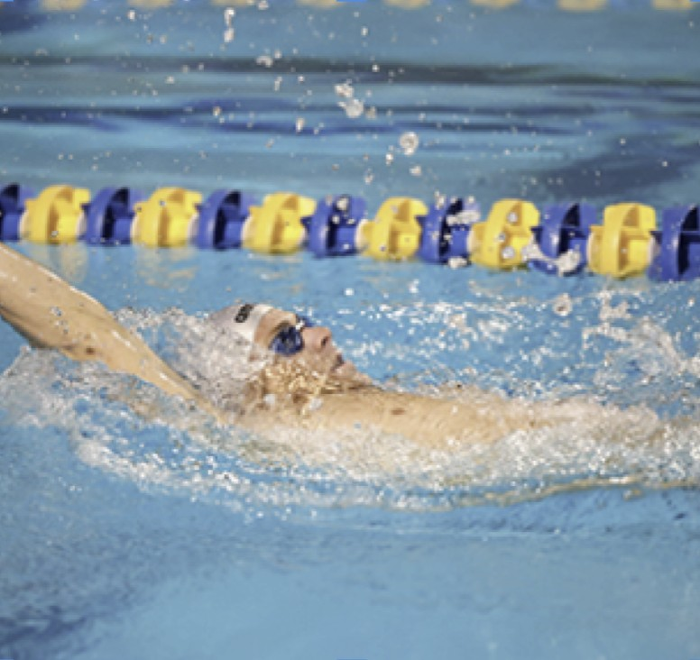
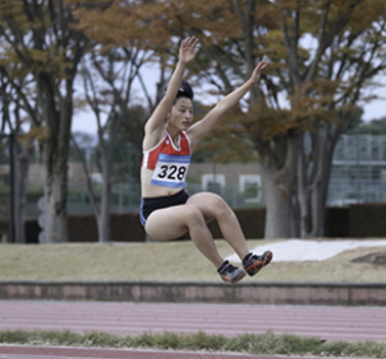

추적 알고리즘
EOS iTR AF X EOS-1D X Mark lll
탑재한 AF 추적 알고리즘을 적용
탑재한 AF 추적 알고리즘을 적용

갑자기 나타난 피사체에
빠르게 초점을 맞추려는 경우

목표 피사체의 속도가 갑자기
가속 / 감속 하는 경우
목표 피사체와 카메라 사이에
장애물이 들어오거나 피사체가
AF
영역에서 벗어나는 경우

다양한 상황에 적용이
가능한 기본 설정